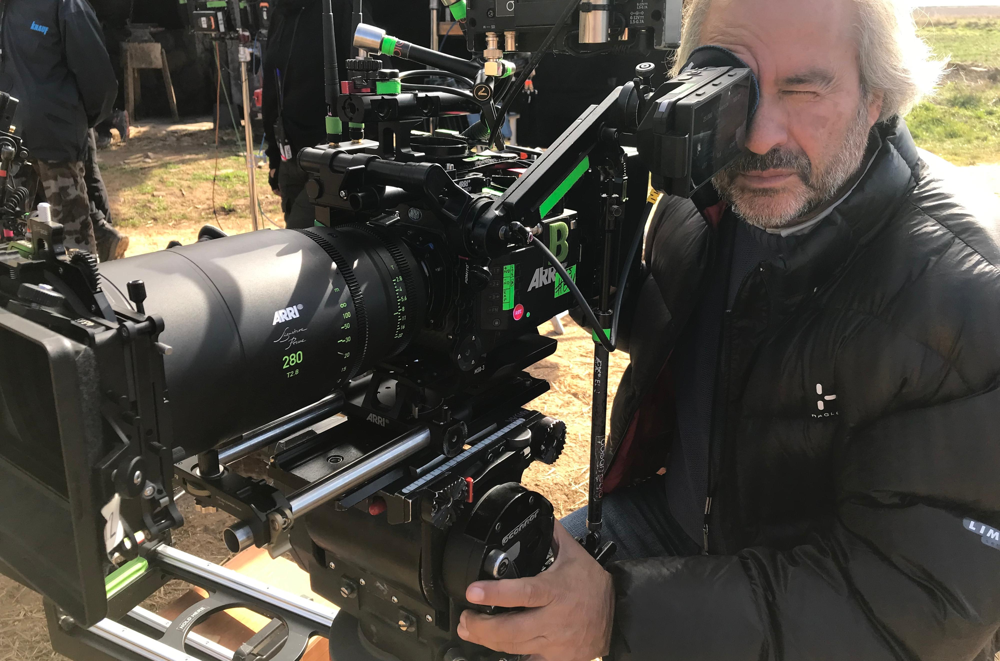
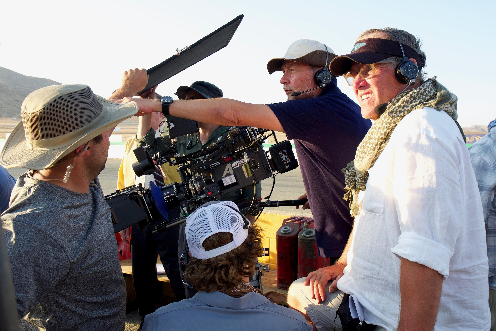
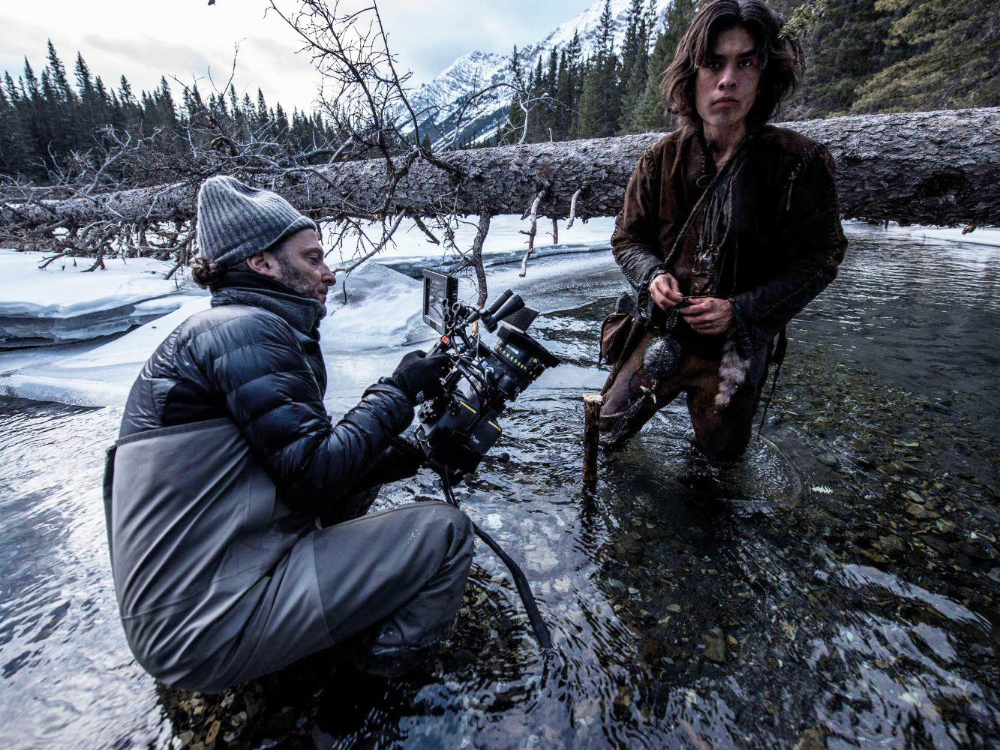

Content made with the Arris Camera.
ARRI is a global company within the motion picture media industry, employing around 1,400 staff worldwide. Named after its founders August Arnold and Robert Richter, ARRI was established in Munich, Germany, where the headquarters is still located today. Other subsidiaries are in Europe, North and South America, Asia, and Australia.
-

Film Cameras-Alexa Mini LF
Combining the compact size and low weight of the popular ALEXA Mini with the large-format ALEXA LF sensor, ALEXA Mini LF brings exciting new creative possibilities to ARRI's large-format camera system.
-

Film Cameras-Alexa LF
ARRI's new large-format camera system consists of the ALEXA LF camera, ARRI Signature Prime and Zoom lenses, LPL lens mount and PL-to-LPL Adapter. Featuring a sensor slightly larger than full frame, the ALEXA LF camera records native 4.5K with ARRI's best overall image quality.
-

Film Cameras-ARRI Amira
AMIRA - the perfect tool for your job - is a truly versatile camera that combines exceptional image quality and affordable CFast 2.0 workflows with an ergonomic design optimized for single-operator use and extended shoulder-mounted operation. Ready to pick up and shoot straight out of the camera bag, AMIRA is hardy enough to take anywhere and features in-camera grading with preloaded 3D LUTs, as well as 200 fps slow motion. The AMIRA ARRIRAW License Key enables in-camera 16:9 2.8K (2880 x 1620) MXF/ARRIRAW recording at frame rates of up to 48fps. It is suitable for a great variety of production types, from TV drama and low-budget movies to nature films, sports coverage, commercials, reportage, branded content and multi-camera live TV. Wherever you are headed and whatever you need to shoot, let AMIRA be your companion.
Solution driven, tailor-made applications for a wide variety of market segments
Shoot cinema quality in any environment from any location with remote control of lights and cameras, including camera movement, with the ARRI Remote Solution for cinema
Contact Us
A direct contact to ARRI. Need information on ARRI Products or want a quote?Contact us and we ll get back to you.
email@123.com
About our company
The ARRI Group consists of the business units Camera Systems, Lighting, Media, and Rental, all dedicated to connecting art and future technologies for moving images. ARRI is a leading designer and manufacturer of camera and lighting systems for the film and broadcast industry, with a worldwide distribution and service network. It is also an integrated media service provider in the fields of film post- and coproduction, international sales, as well as equipment rental, and supplying camera, lighting, and grip packages to professional productions.